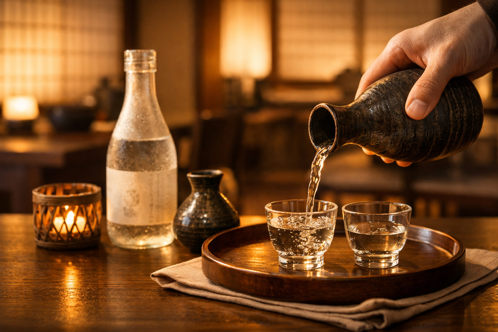

COLORFUL WORLD JAPAN
Premium travel, sake experiences, and business hospitality in Japan.
Tailor-made travel arrangements, curated sake-related programs, executive support, and reliable local coordination across Japan.
上質なオーダーメイド旅行、清酒体験、ビジネス接遇を日本でサポートします。
Services Company ContactColorful World Japan provides premium tailor-made travel services, curated sake and cultural experiences, and practical local support for business and private clients visiting Japan.
We focus on high-quality, flexible, and well-organized arrangements for families, private groups, executives, and overseas partners seeking trusted local coordination in Japan.
Our core services include premium customized travel, sake-related experiences, business hospitality support, and selected local ground arrangements in Japan.
We work with private travelers, families, executives, corporate groups, and overseas travel professionals who need reliable local support in Japan.
カラフルワールドジャパンは、日本国内における高品質なオーダーメイド旅行手配、 清酒・文化体験の企画、そして法人・個人のお客様向けの現地サポートを提供しています。
ご家族旅行、富裕層向け旅行、経営者・法人訪日、視察・商談対応、 海外旅行会社との連携を含め、品質・柔軟性・安心感を重視した手配を行っています。
主力事業は、高付加価値の旅行手配、清酒関連体験、 ビジネス接待・訪日サポート、日本国内での各種地上手配です。
個人のお客様、ご家族、法人・経営者グループ、 ならびに日本での現地手配を必要とする海外旅行会社様に対応しています。